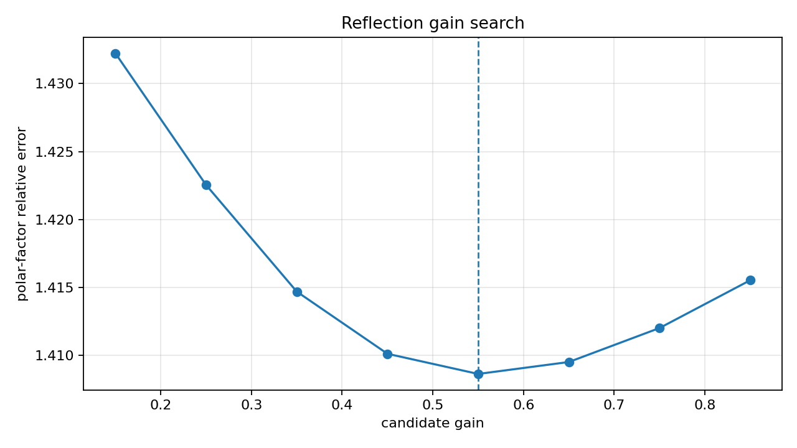
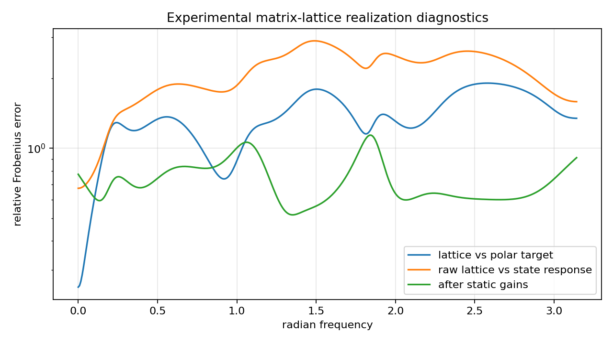
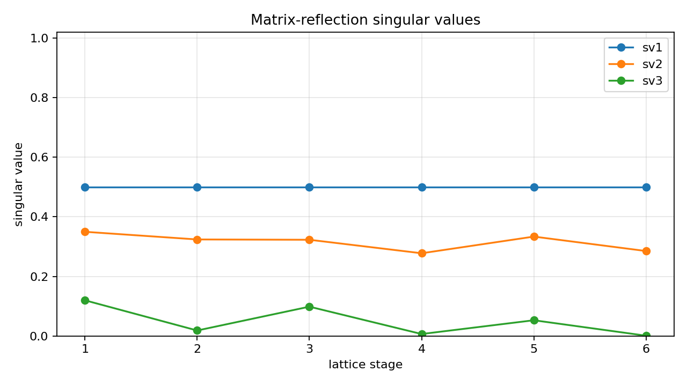

Experimental MIMO state-space to matrix-lattice realization¶
Tutorial goal
Fit a stable matrix-lattice all-pass scaffold to the polar factor of a reduced MIMO state-space response.
Note
New to the terminology? See the lattice DSP concept map and the causality/data-use guide for how online, offline, block, and MIMO examples should be read.
Context¶
This tutorial promotes the previous bridge diagnostic into a small experimental solver-style API. A stable MIMO state-space model is first reduced with the finite block-Hankel baseline. The experimental matrix-lattice helper then builds Markov-initialized all-pass scaffolds, searches over reflection gains, and returns the lattice with the smallest error against the reduced model’s unitary polar factor.
The result is a useful matrix-lattice realization scaffold and initialization diagnostic. Optional static gain compensation reports how much of the remaining mismatch can be explained by constant left/right gains around the all-pass lattice. It is still not a full matrix AAK/Nehari solver and it does not realize arbitrary dynamic gain responses exactly.
Key idea and equations¶
For a square MIMO response H(e^{j\omega}), the target is its polar factor
Candidate matrix-lattice all-pass responses G_\alpha are built from Markov directions
and reflection gain \alpha. Static gain diagnostics then fit
How to read the result¶
Look for a stable lattice, unitarity error near numerical precision, selected gain, polar-factor fit error, and static-gain compensated error. Treat this as an experimental all-pass realization scaffold.
Run command¶
python examples/experimental_mimo_matrix_lattice_realization.py
Run status¶
Return code: 0
Captured stdout¶
full state order: 12
reduced state order: 6
channels: 3
lattice realization order: 6
selected reflection gain: 0.5500
reduced state radius: 0.8775
retained block-Hankel energy: 0.999174
polar-factor fit error: 1.409e+00
raw state-response error: 1.901e+00
static-gain compensated error: 7.295e-01
static-gain improvement: 2.61x
static gain conditions: 24.482 107.399
diagnostic classification: mostly_static_gain_or_nonunitary_mismatch
lattice unitarity error: 1.464e-14
max reflection singular value: 0.5005
target gain condition span: 1.775e+01
status: experimental all-pass/polar realization scaffold, not exact matrix AAK/Nehari
Figures¶
{kind=link}

experimental_mimo_matrix_lattice_gain_search.png¶
{kind=link}

experimental_mimo_matrix_lattice_realization_error.png¶
{kind=link}

experimental_mimo_matrix_lattice_reflections.png¶
Generated data files¶
Source code¶
1"""Tutorial: experimental MIMO state-space to matrix-lattice realization.
2
3This example is intentionally experimental. A general stable MIMO state-space
4model is not automatically a matrix-lattice all-pass model: it can have
5frequency-dependent gain. The helper in this tutorial therefore fits a stable
6matrix-lattice all-pass to the *unitary polar factor* of the reduced MIMO
7response. The returned lattice is useful as a realization scaffold and diagnostic
8initialization, not as a proof of exact matrix AAK/Nehari optimality.
9"""
10
11from __future__ import annotations
12
13import csv
14import os
15from pathlib import Path
16
17import numpy as np
18
19import lattice_dsp as ld
20
21try:
22 from examples.mimo_coupled_model_reduction import coupled_state_space, state_spectral_radius
23except Exception: # pragma: no cover - direct script execution uses examples/ on sys.path.
24 from mimo_coupled_model_reduction import coupled_state_space, state_spectral_radius
25
26
27def artifact_dir() -> Path:
28 path = Path(os.environ.get("LATTICE_DSP_ARTIFACT_DIR", "reports/example-artifacts"))
29 path.mkdir(parents=True, exist_ok=True)
30 return path
31
32
33def main() -> None:
34 out_dir = artifact_dir()
35
36 full_order = 12
37 reduced_order = 6
38 channels = 3
39 n_markov = 240
40 block_rows = block_cols = 28
41 lattice_order = 6
42 n_freq = 384
43 candidate_gains = np.linspace(0.15, 0.85, 8)
44
45 A, B, C, D = coupled_state_space(order=full_order, outputs=channels, inputs=channels, seed=71)
46 markov = ld.mimo_state_space_markov_response(A, B, C, D, n_markov)
47 reduced = ld.finite_hankel_reduce_mimo(markov, reduced_order=reduced_order, block_rows=block_rows, block_cols=block_cols)
48
49 fit = ld.experimental_mimo_state_space_to_matrix_lattice(
50 reduced["A"],
51 reduced["B"],
52 reduced["C"],
53 reduced["D"],
54 order=lattice_order,
55 n_markov=n_markov,
56 n_freq=n_freq,
57 candidate_gains=candidate_gains,
58 fit_static_gains=True,
59 static_gain_mode="both",
60 static_gain_iterations=20,
61 n_threads=1,
62 )
63
64 summary = {
65 "full_order": full_order,
66 "reduced_order": reduced_order,
67 "channels": channels,
68 "lattice_order": lattice_order,
69 "selected_gain": fit["selected_gain"],
70 "reduced_state_radius": state_spectral_radius(reduced["A"]),
71 "retained_hankel_energy": float(reduced["retained_hankel_energy"]),
72 "polar_factor_relative_error": fit["polar_factor_relative_error"],
73 "state_response_relative_error": fit["state_response_relative_error"],
74 "static_gain_relative_error": fit["static_gain_relative_error"],
75 "static_gain_improvement": fit["static_gain_improvement"],
76 "static_gain_left_condition": fit["static_gain_left_condition"],
77 "static_gain_right_condition": fit["static_gain_right_condition"],
78 "diagnostic_classification": fit["diagnostic_classification"],
79 "unitarity_error": fit["unitarity_error"],
80 "max_reflection_singular_value": fit["max_reflection_singular_value"],
81 "target_gain_condition_span": fit["target_gain_condition_span"],
82 "note": fit["note"],
83 }
84
85 csv_path = out_dir / "experimental_mimo_matrix_lattice_realization_summary.csv"
86 with csv_path.open("w", newline="", encoding="utf-8") as f:
87 writer = csv.DictWriter(f, fieldnames=list(summary))
88 writer.writeheader()
89 writer.writerow(summary)
90
91 print("full state order:", full_order)
92 print("reduced state order:", reduced_order)
93 print("channels:", channels)
94 print("lattice realization order:", lattice_order)
95 print("selected reflection gain:", f"{float(fit['selected_gain']):.4f}")
96 print("reduced state radius:", f"{summary['reduced_state_radius']:.4f}")
97 print("retained block-Hankel energy:", f"{summary['retained_hankel_energy']:.6f}")
98 print("polar-factor fit error:", f"{float(fit['polar_factor_relative_error']):.3e}")
99 print("raw state-response error:", f"{float(fit['state_response_relative_error']):.3e}")
100 print("static-gain compensated error:", f"{float(fit['static_gain_relative_error']):.3e}")
101 print("static-gain improvement:", f"{float(fit['static_gain_improvement']):.2f}x")
102 print(
103 "static gain conditions:",
104 f"{float(fit['static_gain_left_condition']):.3f}",
105 f"{float(fit['static_gain_right_condition']):.3f}",
106 )
107 print("diagnostic classification:", fit["diagnostic_classification"])
108 print("lattice unitarity error:", f"{float(fit['unitarity_error']):.3e}")
109 print("max reflection singular value:", f"{float(fit['max_reflection_singular_value']):.4f}")
110 print("target gain condition span:", f"{float(fit['target_gain_condition_span']):.3e}")
111 print("status: experimental all-pass/polar realization scaffold, not exact matrix AAK/Nehari")
112 print(f"wrote {csv_path}")
113
114 try:
115 import matplotlib.pyplot as plt
116 except Exception:
117 print("matplotlib is not installed; skipped figures")
118 return
119
120 omega = np.asarray(fit["frequency_grid"], dtype=float)
121 target = np.asarray(fit["target_polar_response"], dtype=np.complex128)
122 response = np.asarray(fit["lattice_response"], dtype=np.complex128)
123 state_response = np.asarray(fit["state_response"], dtype=np.complex128)
124 compensated = np.asarray(fit["gain_compensated_response"], dtype=np.complex128)
125 per_freq_error = np.linalg.norm(target - response, axis=(1, 2)) / np.maximum(np.linalg.norm(target, axis=(1, 2)), 1e-30)
126 raw_state_error = np.linalg.norm(state_response - response, axis=(1, 2)) / np.maximum(np.linalg.norm(state_response, axis=(1, 2)), 1e-30)
127 compensated_error = np.linalg.norm(state_response - compensated, axis=(1, 2)) / np.maximum(
128 np.linalg.norm(state_response, axis=(1, 2)), 1e-30
129 )
130
131 fig, ax = plt.subplots(figsize=(8.0, 4.5))
132 ax.semilogy(omega, per_freq_error, label="lattice vs polar target")
133 ax.semilogy(omega, raw_state_error, label="raw lattice vs state response")
134 ax.semilogy(omega, compensated_error, label="after static gains")
135 ax.set_title("Experimental matrix-lattice realization diagnostics")
136 ax.set_xlabel("radian frequency")
137 ax.set_ylabel("relative Frobenius error")
138 ax.grid(True, alpha=0.3)
139 ax.legend()
140 fig.tight_layout()
141 fig_path = out_dir / "experimental_mimo_matrix_lattice_realization_error.png"
142 fig.savefig(fig_path, dpi=160)
143 print(f"wrote {fig_path}")
144
145 fig2, ax2 = plt.subplots(figsize=(8.0, 4.5))
146 ax2.plot(np.asarray(fit["candidate_gains"]), np.asarray(fit["candidate_errors"]), marker="o")
147 ax2.axvline(float(fit["selected_gain"]), linestyle="--", linewidth=1.2)
148 ax2.set_title("Reflection gain search")
149 ax2.set_xlabel("candidate gain")
150 ax2.set_ylabel("polar-factor relative error")
151 ax2.grid(True, alpha=0.3)
152 fig2.tight_layout()
153 fig2_path = out_dir / "experimental_mimo_matrix_lattice_gain_search.png"
154 fig2.savefig(fig2_path, dpi=160)
155 print(f"wrote {fig2_path}")
156
157 reflections = np.asarray(fit["reflections"], dtype=np.complex128)
158 reflection_svs = np.array([np.linalg.svd(k, compute_uv=False) for k in reflections]) if reflections.size else np.empty((0, channels))
159 fig3, ax3 = plt.subplots(figsize=(8.0, 4.5))
160 if reflection_svs.size:
161 for j in range(reflection_svs.shape[1]):
162 ax3.plot(np.arange(1, reflection_svs.shape[0] + 1), reflection_svs[:, j], marker="o", label=f"sv{j + 1}")
163 ax3.set_title("Matrix-reflection singular values")
164 ax3.set_xlabel("lattice stage")
165 ax3.set_ylabel("singular value")
166 ax3.set_ylim(0.0, 1.02)
167 ax3.grid(True, alpha=0.3)
168 ax3.legend()
169 fig3.tight_layout()
170 fig3_path = out_dir / "experimental_mimo_matrix_lattice_reflections.png"
171 fig3.savefig(fig3_path, dpi=160)
172 print(f"wrote {fig3_path}")
173
174
175if __name__ == "__main__":
176 main()